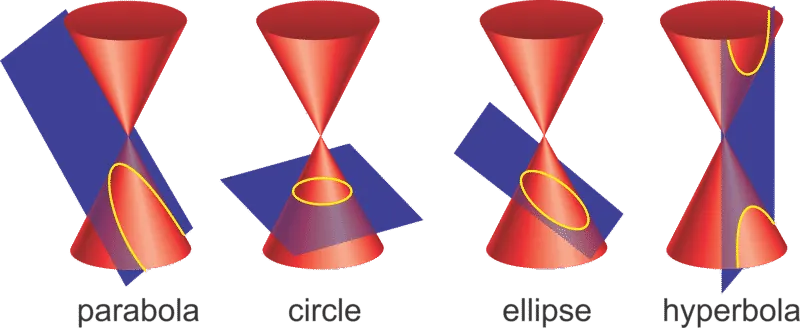
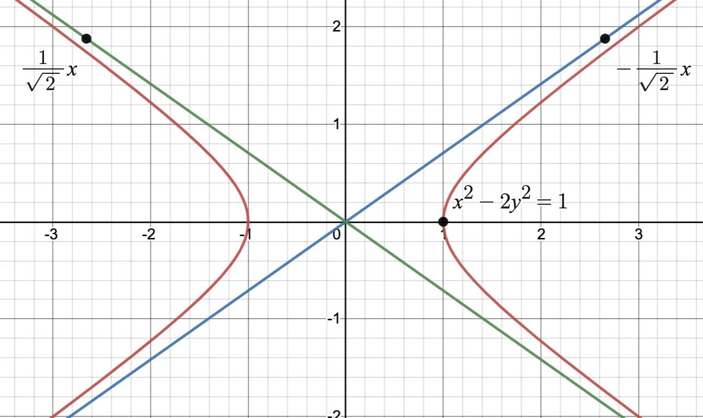
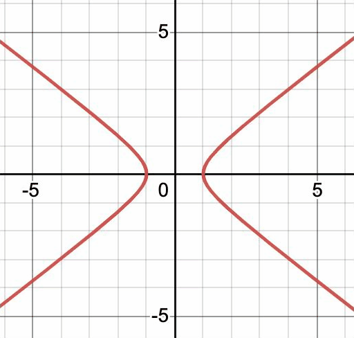
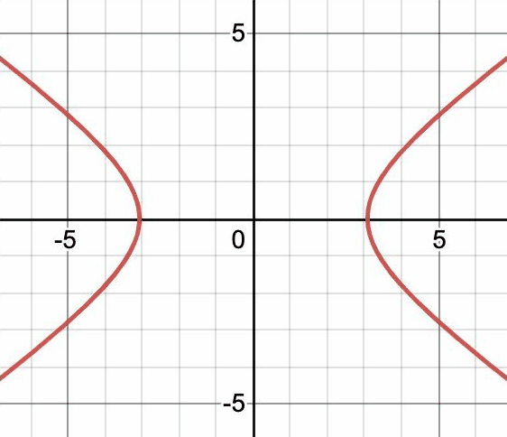
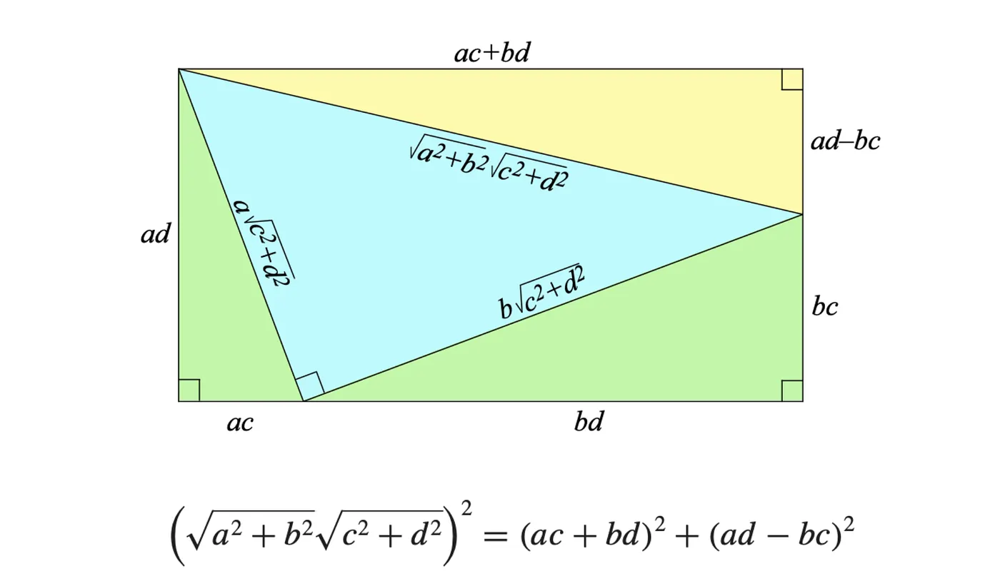
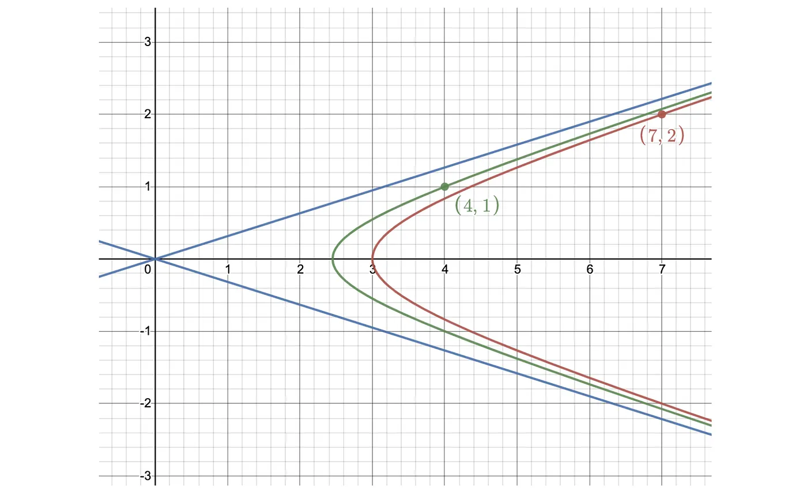

Etymology is funny sometimes. Sometimes it tells you a lot, sometimes nothing at all. For example, the word parabola comes from the ancient Greek word for “applied.” Hyperbola comes from υπερβολή or “excessive” and ellipse is derived from “a deficient.” From their words, you’d almost think the Greeks weren’t fond of conic sections.
Don’t let it fool you. They loved them.
A large part of ancient Greek contributions to mathematics are based on the simplicity of taking slices of a cone. Euclid apparently wrote four books on conics (which history somehow managed to lose).

And just as the ancient Greeks loved conics, the medieval Indians loved algebra. We’re going to be focusing on one particular algebraic equation in this article, one that intersects both world. Integer solutions of a hyperbola.
The equation of a hyperbola is pretty simple:
Let’s draw a picture. Hyperbolas form an open curve with two sections that mirror each other. Both become straighter as they approach infinity along one of two asymptotes.

In terms of conic sections, a hyperbola is the intersection of a plane through both halves of a double cone. Interestingly enough, the plane does not need to be vertical. The hyperbola will still be symmetric if its intersecting plane is at a slant to the cone.
Let’s explore the equation a little more algebraically.
What happens if you change N? The graph squishes.

What about changing the 1 on the right side? Calling this k, the two sides of the graph get further apart as k increases (remember this).

Now, let’s add some restrictions to the equation. What about integer solutions of x, y, and k? Do all k’s even have integer solutions? Obviously some do–in both gifs the graph crosses lattice points of the grid–but do all k’s have them? Is there an easy way to find the smallest solution if it does?
This is what medieval India was interested in. In modern terms, they were doing early Diophantine analysis on Pell’s equation. Some solutions were not something European mathematicians would solve until 1657, when Fermat sent out n=61 as a challenge to his peers.
Medieval India not only had already solved n=61, they had found a generalized algorithm for all n.
“What would have been Fermat’s astonishment if some missionary, just back from India, had told him that his problem had been successfully tackled there by native mathematicians almost six centuries earlier?” — André Weil
•••
Brahmagupta’s Identity
The first identity we need is this:
If two positive integers are each sums of two squares, then their product is a sum of two squares in two different ways
For example, 10 can be written as 3²+1² and 41 can be written as 5²+4². Therefore, 10 · 41 can be written as the sum of two squares, and in two different ways: 19²+7² or 11²+17².

Around the year 628, Brahmagupta generalized this identity into the following:
Given a particular integer n, the set of all integers expressed as x² — ny² is closed under multiplication.
Using Brahmagupta’s identity, we can use two triples (a, b, k) and create a composition law.
It works like this. If (a, b, and k₁) and (c, d, and k₂) are solutions to x² – ny² = k, then a² – nb² = k₁ and c² – nd² = k₂. Using the identity and multiplying them together, we get (a² – nb²)(c² – nd²) = (ac + nbd)² – n(ad + bc)² = k₁k₂.
And just like that, we’ve made another triple: (ac + nbd, ad + bc, k₁k₂).
Freely changing k, we have an infinite number of integer solutions to the equation.
Graphically, given two integer points on a hyperbola–say, (4, 1) and (7, 2) and an asymptote (in this case ±x/√10x), we can find another hyperbola with a larger k (and the same asymptotes) that crosses an integer point.

This means we can generate integer points for an infinite number of hyperbolas, but we have a problem. The k’s always increase. Remember from the gif that larger k’s mean the hyperbola is shifted further from the origin. In Pell’s equation the hyperbola crosses x = 1. We want the k’s to decrease to one.
Brahmagupta, using his composition law and simple division, could sometimes solve for n = 1, but not for all integers and not with a general method. For example, he uses the example x² – 92y² = 1. He starts with the triple (10, 1, 8) because 10² — 92(1)² = 8 (remember, you can freely change the k’s) He composes it with itself to get the triple (192, 20, 64). Because 192² and 8² are both divisible by 64, he divides them. This gives the triple (24, 5/2, 1). Composing it with itself with give the triple (1151, 120, 1). Thus x = 1151, y = 120 is an integer solution of x² – 92y² = 1.
Bhahmagupta developed a few more tricks and shortcuts. He solved Pell’s equation for most low values of n and proved the if you could find a triple with k = -4, -2, -1, 2, or 4, then you could also find a triple for k = 1.
However, a general method would not be found until five centuries later.
•••
The Chakravala Algorithm
This brings us to Bhaskara’s lemma, generalized in the verses of Bijaganita by Bhaskara II around 1150 (Bhaskara actually hints that he did not himself discover the method, but does not say who did).
Assume we have a triple (a, b, k) that satisfies x² - ny² = k. We can make another trivial triple by setting y = 1. If x = c, then this triple is (c, 1, c² – n). Using the composition law, a new triple (ac + nb, a + bc, k(c² – n)) can be created.
From the triple (ac + nb, a + bc, k(c² – n)), Bhaskara did something clever. He figured out that you can choose a “c” that makes each of the quantities in the triple divisible by k², thus making the new triple smaller than the one that came before. Then you can repeat the process until k = 1.
It works like this. Choose a “c” so that a + bc is divisible by k. We already know k(c² – n) is divisible by k. a + bc is divisible by k (because we choose it to be so). Assuming “a” and “b” are relatively prime, we also know that ac + nb is divisible by k.
Why? Because in an equation a + b = c, if any two of a, b, and c are divisible by another number x, then the third one is also divisible by x because you can factor x out on one side of the equation.
And since both equations on the left are squared, we can divide the entire thing by k². This gives us
The rest of the algorithm is pretty simple. Making sure to choose a “c” so that a + bc is divisible by k, we minimize c² – n. This ensures that the k our new triple has is as small as possible. Then just repeat.
ह्रस्वज्येष्ठपदक्षेपान् भाज्यप्रक्षेपभाजकान् । कृत्वा कल्प्यो गुणस्तत्र तथा प्रकृतितश्च्युते ॥ गुणवर्गे प्रकृत्योनेऽथवाल्पं शेषकं यथा । तत्तु क्षेपहृतं क्षेपो व्यस्तं प्रकृतितश्च्युते ॥ गुणलब्धिः पदं ह्रस्वं ततो ज्येष्ठमतोऽसकृत् । त्यक्त्वा पूर्वपदक्षेपांश्चक्रवालमिदं जगुः ॥ चतुर्द्व्येकयुतावेवमभिन्ने भवतः पदे । चतुर्द्विक्षेपमूलाभ्यां रूपक्षेपार्थभावना ॥
Bhaskara named his method ‘chakravala’ (somewhat more helpfully than those Greeks) because of its cyclic nature of the algorithm. ‘Chakra’ means ‘wheel.’
def new_triple(abk, m):
a_1 = int((m * abk[0] + n * abk[1]) / abs(abk[2]))
b_1 = int((abk[0] + m * abk[1]) / abs(abk[2]))
k_1 = int((m**2 - n) / abk[2])
return (a_1, b_1, k_1)
def chakravala(abk, n):
possible_ms = []
first_m = 0
for i in range(abs(abk[2])):
if (abk[0] + abk[1] * i) % abk[2] == 0:
first_m = i
possible_ms = [first_m + abs(i * abk[2]) for i in range(10)]
least_m2 = possible_ms[0]
for m in possible_ms:
if abs(m**2 - n) < abs(least_m2**2 - n):
least_m2 = m
abk = new_triple(abk, least_m2)
if abk[2] == 1:
return abk
else:
return chakravala(abk, n)
n = 61 # any number not a square
c = 5 # arbitrary starting number
abk = (c, 1, c**2 - n)
chakravala(abk, n)Make sure gcd(a, b) = 1 and a, b, and k actually solve the equation if you want to change the tuple abk
Try the code for n = 61. This was the example Bhaskara used. He calculated that the smallest solution is a = 1766319049, b = 226153980 !
The algorithm is considered one of the most impressive discoveries in number theory until 18th century Europe. It is guaranteed to terminate with the smallest solution and usually does it very quickly with minimum calculation. It is also an early insight into the connection between repeating continued fractions and radicals, and is roughly equivalent to finding convergents of \(\sqrt{n}\).